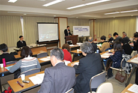

埼玉県生協役職員研修委託事業
生協法見直しに関わるこの間の進捗報告と今後の進め方～学習会報告
- 【日 時】
- 3月14日(木)10:30～12:05
- 【場 所】
- さいたま共済会館502
- 【参加者】
- 26人(さいたまコープ、パルシステム埼玉、生活クラブ生協、医療生協さいたま、埼玉県勤労者生協、さいたま住宅生協、埼玉県労済生協、さいたま高齢協、埼玉県民共済生協、埼玉医療生協、埼玉県生協連）
■概 要
はじめに、2月27日NHKで放映された｢震災がおきたらどう商品を届ける｣をテーマにした生協の取り組みについてDVDで紹介しました。
「生協法見直しに関わるこの間の進捗報告と今後の進め方について」
講師：青竹 豊氏(日本生協連執行役員渉外広報本部長)、吉田知未氏(渉外担当)

1．さらなる見直しが必要になる事項
2．要望の基調
基調は､｢前回改正の基本的枠組みを前提としつつ、急速に進む社会の構造的な変化や今日の経済情勢、災害などから生まれるくらしの厳しさや不安に直面する消費者・市民の願いに応え、生協がその特性を活かし社会的役割と責任を果たし続けるための基盤となる制度整備を求めます｡｣性格は、前回改正の基本的な枠組みを前提とし、重要性・緊急性等の観点から一定の重点化を行ったものとなっています。
3．要望する事項
（1）生協(協同組合)の特性の明確化～組合基準(生協法第2条)にICA原則の理念を反映させるなどし、法律上で生協(協同組合)の特性を明確なものとすること。
（2）社会的役割発揮の促進と持続のための制度整備～生協における人と人の結合を広げ強め、社会の中で助け合いの輪を広げつつ、生協と存続していくため、区域制限や員外利用に関わる制度を見直すこと。
（3）社会的責任経営のためのガバナンス強化～社会的責任をより果たすため、ガバナンスにおいて生協・協同組合の実態・特質を踏まえた規律(制度)を整備すること。
（4）くらしの保障のニーズに総合的・安定的に対応するための共済制度の見直し～くらしの保障のニーズに総合的・安定的に対応するため、生協と理念を同じくする協同組織など他の団体との連携したサービスの提供、大災害の発生を含めいかなる場合でも健全性基準を満たした安定的な運営、組合員の家族を含めた安定的な保障の継続を可能とするための共済制度の見直しをすること。
（5）多重債務・生活困窮相談と連携した貸付事業の充実と安定運営のための制度整備(多重債務・生活困窮相談と連携した貸付事業をより安定させ、安定的な運営を図るため、純資産額規制の緩和、貸付資金の確保のための制度整備をすること。
（6）生協の性格や実態に適合する制度整備～既存制度のうち生協･協同組合の性格や実態に見合わず合理的でないものの見直しや､円滑な運用を実現する制度整備をすること。
4．要望化しなかった事項
5．生協法改正等に関わる取り組み経過と今後の課題